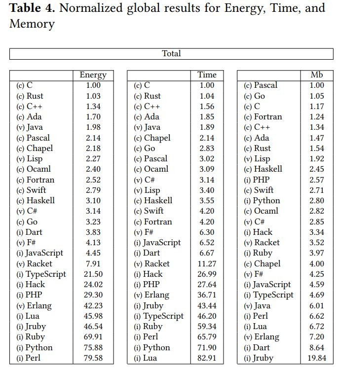

1. Informatyka Geodezyjna - repetytorium Python#
Te zajęcia mają na celu przypomnienie i powtórkę umiejętności związanych z programowaniem w języku Python. Celem jest zbudowanie niezbędnej wiedzy do zaznajomienia się z programowaniem obiektowym - które jest jedym z celów nauczania na tym kursie.
Powtórka obejmuje zagadnienia z przedmiotu Technologia Informacyjna i zawiera zagadnienia takie jak:
Typy danych i zmienne
Operatory
Komentowanie kodu
Biblioteki rozszerzające funkcjonalność
Pisanie funkcji
Kontrola przepływu w kodzie
Pętle
O języku Python i o co w nim chodzi
Python to prosty i potężny język programowania. Jest prosty w nauce i pozwala skupić się na problemie, nie problemie programowania. To język wysokiego poziomu.
Oficjalne wprowadzenie do Pythona brzmi:
Python jest łatwym w nauce, poteżnym językiem programowania. Posiada wysokopoziomowe struktury danych i proste, ale efektywne podejście do modelowania obiektowego. Elegancka struktura (syntax) Pythona i dynamiczne zmienne sprawiają, że jest idealnym językiem do skryptowania i szybkiego wdrażania rozwiązań w wielu dziedzinach i na wielu platformach.
Wady i zalety Pythona#
Wady
Największą i najczęściej wymienianą wadą Pythona jest jego szybkość i wykorzystanie pamięci. Python jest wolny i wymaga sporych zasobów
Zalety#
Największą zaletą Pythona jest jego popularność . Ta zaleta pozwala na pokonanie wszystkich jego wad - również tych związanych z jego powolnością.
Python ma niepodważalne zalety w postaci oszczędności kodu, łatwości zrozumienia, automatycznego zarządzania pamięcią, przenoszalności i czytelności. Dlatego też został wybrany przez ogromną liczbę programistów i deweloperów blibliotek.
Deweloperzy bibliotek napisali odpowiednie narzędzia, które umożliwiają wykonywanie wszystkiego co potrafią konkurencyjne języki. Dzięki temu, Python to świetne narzędzie do wszystkiego .
Jest językiem obiektowym
Języki programowania można również podzielić na:
- Strukturalne
- Obiektowe
W programowaniu strukturalnym dzielimy funkcjonalności na moduły (podprogramy).
W programowaniu obiektowym tworzymy obiekty , każdy z nich ma własne działania (metody) oraz właściwości (atrybuty). Z założenia, mają reprezentować elementy świata rzeczywistego.
W Pythonie można pisać kod w obu z tych podejść, choć jest on nastawiony na programowanie obiektowe.

Funkcje i metody#
Zacznijmy od omówienia czym są funkcje i metody Pythona.
Funkcje i metody to fragmenty kodu (zaimplementowane gdzieś w innym miejscu), które mają jakąś funkcjonalność, tzn. wykonują ten kod w tle dla nas by dostarczyć konkretny wynik.
Zarówno funkcje i metody przyjmują parametry które są danymi wsadowymi od nas lub modyfikują zachowanie funkcji.
Funkcje
Funcje mają strukturę (syntax) następującej postaci:
nazwa(parametr_1,parametr_2,…,parametr_n)
Wyróżniamy funkcje wbudowane i funkcje zdefiniowane przez użytkownika.
Funkcje wbudowane są dostepne poprzez wywołanie ich nazwy wprost w kodzie (dostępne tu: https://docs.python.org/2/library/functions.html).
Funkcje definiowane przez użytkownika pozwalają na utworzenie nowej funkcjonalności (zajmiemy się nimi później).
Inne funkcje możemy importować poprzez biblioteki programistyczne - o tym później
Metody
Python jest językiem programowania obiektowego . Oznacza to, że wszystko w nim jest obiektem, który ma swoje właściwości, takie jak atrybuty i metody (o tym dokładniej w dalszej części kursu).
Metody wywoływane są zatem na obiektach. Stanowią one intergralną część tych obiektów. Ich składnia to: nazwa_obiektu.nazwa_metody(parametr_1,parametr_2,…,parametr_n)
Istnieje w języku kilka wbudowanych obiektów, które posiadają wbudowane metody. Przykładem wbudowanych obiektów są typy danych.
Funkcje wbudowane#
Funkcje wbudowane to funkcje, które są dostępne od razu, gdy tylko rozpoczniemy pisanie kodu. Zwykle są to podstawowe funkcjonalności, które muszą zawsze być pod ręką. Ich lista znajduje się tutaj: https://docs.python.org/3/library/functions.html
print("Hello World!")
Hello World!
Deklaracja zmiennej#
To podstawowa operacja polegająca na przypisaniu wartości do zdefiniowanej przez nas zmiennej
x = 2
Wykonaj funkcję wbudowaną print() na zmiennej x!
Teraz zmieńmy tę wartość na coś innego:
x = 12
Co zwróci print(x)?
Proste typy zmiennych#
Proste typy danych
To są typy wbudowane - klasy wbudowane
Liczby
- całkowite (int)
- zmiennoprzecinkowe (float)
- złożone (complex)
Liczba całkowita (int) oraz funkcja wbudowana type:
type(3)
int
Zmiennoprzecinkowa (float)
3.3
3.3
Tekst
print('Pierwszy sposób')
Pierwszy sposób
print("Drugi sposób")
Drugi sposób
print("""Trzeci sposób
wyjątkowy""")
Trzeci sposób
wyjątkowy
Typ logiczny (boolean)
False
False
Ćwiczenie 1
Zdefiniuj zmienną y i przypisz jej wartość zmiennoprzecinkową.
Wyświetl wartość y poprzez print() oraz wyświetl typ zmiennej funkcją type().
Zmień wartość y na typ tekstowy.
Jaki ma teraz typ?
#Zadanie wykonuj tutaj
Rzutowanie typów
To zmiana typu danej na inną.Do tego wykorzystujemy funkcji wbudowanych, które mają taką samą nazwę jak typ zmiennej w Pythonie
Sprawdźmy najpierw typ zmiennych używając funkcji wbudowanej type()
Liczba całkowita
print(type(2))
<class 'int'>
Liczba zmiennoprzecinkowa
print(type(3.4))
<class 'float'>
Tekst
print(type("Tekst"))
<class 'str'>
Typ logiczny
print(type(False))
<class 'bool'>
Oczywiście możemy sprawdzać tak typ zmiennej:
x = 3.14
print(type(x))
<class 'float'>
Rzutowanie typów zatem odbywa się wprost:
x = 3.88
print(int(x))
3
Ale zwróćmy uwagę, że:
x = 3.88
int(x)
print(x)
3.88
x = 3.88
x = int(x) #PAMIĘTAJ O ZAPISANIU DO ZMIENNEJ
print(x)
3
Uwaga na rzutowanie czegoś co nie może być typem docelowym:
float("A")
---------------------------------------------------------------------------
ValueError Traceback (most recent call last)
Input In [19], in <cell line: 1>()
----> 1 float("A")
ValueError: could not convert string to float: 'A'
Rzutowanie tekstu:
print(str(122))
122
Rzutowanie na typ logiczny:
Operatory binarne
Podstawowe operacje są zdefiniowane w Pythonie bez potrzeby korzystania z zewnętrznych bibliotek
a + b
a - b
a * b
a / b
a // b (usuwa część po przecinku - floor-divide)
a ** b
a = 2
b = 4
print(a+b)
6
a = 2
b = 4
print(a-b)
-2
a = 2
b = 4
print(a*b)
8
a = 2
b = 4
print(a/b)
0.5
a = 2
b = 4
print(a//b)
0
a = 2
b = 4
print(a**b)
16
a = 2
b = 4
print(a%b)
2
Ćwiczenie:#
Na liście funkcji wbudowanych znajdź funkcję, która oblicza wartość bezwzględną liczby
Operatory logiczne#
a == b
a != b
a <= b; a < b
a is b
a is not b
a = 2
b = 4
print(a==b)
False
a = 2
b = 4
print(a!=b)
True
a = 2
b = 4
print(a>b)
False
a = 2
b = 4
print(a<b)
True
a = 2
b = 4
print(a>=b)
False
a = 2
b = 4
print(a<=b)
True
print(a is None)
False
print(b is not None)
True
Operatory dla innych typów zmiennych oznaczają inne operacje#
a = "Te"
b = "kst"
print(a+b)
Tekst
a = "Te"
b = 12
print(a*b)
TeTeTeTeTeTeTeTeTeTeTeTe
Ćwiczenie:#
Sprawdź nierówność z dwiema zmiennymi zawierającymi znaki tekstowe. Spróbuj wykorzystać duże i małe litery oraz znaki specjalne. Jakie są wnioski?
# tutaj
Błędy
Gdy pojawi się w kodzie błąd, warto spojrzeć na to co go spowodowało, by znaleźć przyczynę
a = 2
float("Tego nie da się")
print(a + a)
---------------------------------------------------------------------------
ValueError Traceback (most recent call last)
<ipython-input-62-b314694a7f26> in <module>
1 a = 2
----> 2 float("Tego nie da się")
3 print(a + a)
ValueError: could not convert string to float: 'Tego nie da się'
Importowanie bibliotek
Biblioteki zawierają dodatkowe funkcjonalności, klasy i typy danych. Biblioteki można importować na 3 sposoby:
import math #cała biblioteka
from math import * #znowu cała biblioteka, ale importujemy każdą funkcję osobno
from math import sqrt #importowanie jednej funkcji
from math import *
exp(2)
7.38905609893065
Na przykładzie pierwiastka "sqrt"
import math
math.sqrt(4)
2.0
from math import *
sqrt(4)
2.0
Gdy używamy nowej, nieznanej nam biblioteki - kluczowe jest poznanie jej dokumentacji#
Dokumentacja bilbioteki math: https://docs.python.org/2/library/math.html
Komentarze#
Komentarze które zaburzają klarowność kodu są gorsze niż brak komentarzy
Komentujemy z wykorzystaniem pełnych zdań
Upewnij się, że komentarz jest zrozumiały dla każdego, kto kiedykolwiek miałby przeczytać kod
Komentarze blokowe#
Wplatane za pomocą znaku “#” na tym samym poziomie, do którego się odnoszą np:
# komentarz blokowy
a = b
Komentarze “docstring”#
Wpisywane za pomocą potrójnego cudzysłowu (“””), używane do dokumentowania funkcji i klas
# Przykład funkcji z komentarzem docstring
def funkcja(parametr1, parametr2):
"""Komentarz opisujący funkcję
Opis parametrów
Opis wyjścia
"""
Złożone typy danych#
Złożone typy danych to takie, które składają się z typów podstawowych - wbudowanych, czyli takie, które mogą zostać rozłożone na prostsze czynniki.
Pierwszy złożony typ danych już poznaliśmy, był to….
Tekst (str)#
tekst1 = 'T' # tylko jeden znak
tekst2 = 'Tekst' # kilka znaków - złożony typ danych
Istotną funkcjonalnością złożonych typów danych jest ich indeksowanie
Indeksowanie pozwala na pobranie wartości obiektu złożonego - ze znaków, z wartości lub z innych obiektów.
Indeks w Pythonie liczymy od zera
s = "Monty Python"
print(s[5])
Indeksy ujemne#
Co się stało poniżej?
print(s[-1])
n
Indeksowanie działa tylko w typach złożonych:
a = 232
print(a[0])
---------------------------------------------------------------------------
TypeError Traceback (most recent call last)
Cell In[4], line 2
1 a = 232
----> 2 print(a[0])
TypeError: 'int' object is not subscriptable
Funkcja wbudowana len()#
print(len(s))
12
Wycinki
Podobnie do indeksowania pozyskują wartości, z tą różnicą że pobieramy wybrany fragments = "Monty Python"
print(s[0:5]) #ciągi z lewej strony są domknięte, a z prawej niedomknięte
Monty
s = "Monty Python"
print(s[:2]) #od początku
Mo
s = "Monty Python"
print(s[2:]) # do końca
nty Python
s = "Monty Python"
print(s[2:8:2]) # od 2 do 8 (wyłączając 8my indeks), co drugi znak
nyP
Typy złożone
Python oferuje wiele dodatkowych typów danych złożonych, zwłaszcza za pośrednictwem bibliotek.
Kilka z nich jest jednak wbudowane w język i są bardzo użyteczne, a ich znajomość ułatwia pracę. Są to:
- Listy
- Słowniki
- Krotka
- Zbiór
Na poprzednich wykładach poznaliście jedynie listy:
Listy
Pozwalają przechowywać wiele elementów, dowolnego typu, są modyfikowalne i zachowują kolejność elementów Definiuje się je przez []nowa_lista = [2,3]
print(nowa_lista)
[2, 3]
print(type(nowa_lista))
<class 'list'>
nowa_lista = [1,2,4,5,8] #lista int
nowa_lista2 = ['jeden','dwa','cztery','pięć'] #lista str
print(type(nowa_lista2))
<class 'list'>
Listy mogą mieszać typy danych
lista_mieszana = [1,4,'pięć',False]
listcepcja = [1,[3,4],'dwa',['zaraz zagnieździmy',['kolejne gniazdo']]]
Indeksowanie w listach
listcepcja = [1,[3,4],'dwa',['zaraz zagnieździmy',['kolejne gniazdo']]]
print(listcepcja[3])
['zaraz zagnieździmy', ['kolejne gniazdo']]
Ćwiczenie:#
Spróbuj otrzymać literę o ze słowa ‘kolejne gniazdo’
#tutaj
Modyfikacja listy - dodawanie i zmiana elementów
Poprzez indeks:#
lista = [1,2,3,4,5]
lista[0] = "jeden" #POPRZEZ INDEKS
print(lista)
['jeden', 2, 3, 4, 5]
lista = [1,2,3,4,5]
lista[1] = 'dwa'
print(lista)
[1, 'dwa', 3, 4, 5]
Dodawanie do listy:#
lista = [1,2,3,4,5]
lista.append("siedem") #DODAJ DO KOŃCA
print(lista)
[1, 2, 3, 4, 5, 'siedem']
lista = [1,2,3,4,5]
lista = lista + ['siedem']
print(lista)
[1, 2, 3, 4, 5, 'siedem']
Modyfikacja listy - usuwanie elementów
lista = [1,2,3,4,5]
print(lista.remove(1))
print(lista)
None
[2, 3, 4, 5]
lista = [1,2,3,4,5]
print(lista.pop(1))
print(lista)
2
[1, 3, 4, 5]
To ćwiczenie omawia metody kontroli przepływu czyli:#
Pętle for i while
Instrukcje warunkowe
Wcięcia#
Kluczowe w Pythonie są wcięcia w kodzie. Wcięcia składają się z 4 spacji (lub Tab) i oznaczją kod podrzędny , czyli taki kod, który zależny jest od tego, który w hierarchi znajduje się ponad nim.
kod nadrzędny
kod podrzędny
Możliwe jest wielopoziomowe zagnieżdżanie kodu:
kod nadrzędny
kod podrzędny_1stopien
kod podrzędny_2stopien
W powyższym przykładzie kod podrzędny 1 stopnia będzie nadrzędny względem kodu podrzędnego 2 stopnia.
Wcięcia są bardzo ważną składową Pythona i dbają o porządek i łatwość czytania kodu. Są niezbędne w metodach kontroli przepływu danych.
Iteracje - pętla for i while (na sekwencjach)#
Pętle tworzą tzw. iteratory, które iterują się przez sekwencję zwracając każdorazowo kolejne elementy
Pętle for#
Jej konstrukcja jest nastepująca
for nazwa_iteratora in nazwa_sekwencji:
rób coś
Zwróć uwagę na wcięcie w składni
for i in "Python":
print(i)
P
y
t
h
o
n
tekst = "Python"
for i in tekst:
print(i)
print("a")
P
a
y
a
t
a
h
a
o
a
n
a
Wewnętrz pętli można wykonywać operacje:
for i in [1,2,3,4]:
print(i + 1)
2
3
4
5
Wszystko co nie jest wcięte jako kod podrzędny - wykonuje się po pętli#
for i in [1,2,3,4]:
print(i + 1)
print("TO WYKONA SIĘ PO PĘTLI")
2
3
4
5
TO WYKONA SIĘ PO PĘTLI
for i in [1,2,3,4]:
print(i + 1)
print("TO WYKONA SIĘ WEWNĄTRZ PĘTLI")
print('a to już na końcu')
2
TO WYKONA SIĘ WEWNĄTRZ PĘTLI
3
TO WYKONA SIĘ WEWNĄTRZ PĘTLI
4
TO WYKONA SIĘ WEWNĄTRZ PĘTLI
5
TO WYKONA SIĘ WEWNĄTRZ PĘTLI
a to już na końcu
Przepływ danych w pętli for#
Pętla for wykonuje się N razy, gdzie N to długość sekwencji
licznik = 0
for n in [1,2,3]:
licznik += 1 # to wyrażenie jest równe licznik = licznik + 1
print(licznik)
print(len([1,2,3]))
3
3
Iterator zmienia się tylko wewnątrz pętli
for n in [1,2,3]:
print('')
print(n)
3
Ćwiczenie#
Ile razy łącznie wykona się najbardziej podrzędny kod w poniższym kodzie?
x = range(10)
y = range(5)
for n in x:
for m in y:
operacja <--- ile razy wykona się ten kod?
Pętla while#
Pętla for wykonuje się dopóki sekwencja nie dobiegnie końca. Pętla while wykonuje się dopóki podany warunek jest spełniony.
Konstrukcja
while warunek :
~rób coś~
Należy uważać, gdyż warunek może nie zostać spełniony nigdy, a kod utknie w pętli!
i = 12
while i > 10:
#12, 11
i -= 1 #11, 10
print(i) #11, 10
11
10
i = 12
while i > 10:
i -= 1
print(i)
11
10
Kontrola przepływu - if, elif, else
Instrukcje warunkowe if służą do kontroli przepływu poprzez narzucanie warunków na kod. Struktura toif warunek :
rób coś
elif warunek :
rób coś
else:
rób coś
Najprostsza konstrukcja#
warunek musi być zmienną o typie bool (typem logicznym)
if True:
print("A")
A
if False:
print("A")
if False:
print("A")
print("B")
B
W warunku może być wstawione coś co zwróci typ logiczny:
if 2<3:
print("A")
A
a = 2
b = 3
if a<b:
print("A")
A
Wykorzystanie elif#
if 2>3:
print("dwa jest wieksze od trzech")
elif 2<3:
print("dwa jest mniejsze od trzech")
dwa jest mniejsze od trzech
a = 2
b = 3
c = 4
if b>a:
print("IF")
elif c>b:
print("ELIF")
IF
a = 2
b = 3
c = 4
if b>a:
print("IF")
if c>b:
print("ELIF")
IF
ELIF
Python - funkcje, definicja funkcji, wyjątki
Ta część szkolenia omawia możliwość ułatwienia pracy z wykorzystaniem własnych funkcji, czyli fragmentów kodu, który możemy wykonywać wielokrotnie za pomocą prostego odwołania.
Funkcje
Tworzą one "wywoływalne bloki instrukcji".
Są szczególnie przydatne gdy używamy pewnego fragmentu kodu wielokrotnie - zgodnie z ideą DRY (Don't Repeat Yourself)
Mogą (nie muszą) przyjmować parametry/argumenty
Mogą (nie muszą) zwracać obiekt
Definicja funkcji#
def nazwa_funkcji(argumenty):
instrukcje
...
return obiekt
Pamiętamy o wcięciu 4 spacjami lub tabulatorem!
Przykładowo chcemy zdefiniować funkcję, która po wywołaniu wyświetla tekst “Hello World!”
def hello():
print("Hello World!")
#deklaracja nie powoduje uruchomienia
hello() #wywołanie powoduje uruchomienie
Hello World!
Wykorzystanie argumentów funkcji
def suma(a,b):
print(a+b)
suma(4,3)
7
Return w funkcji#
def suma(a,b):
print(a+b)
x = suma(4,3)
print(x) #to zwraca None (nic)
7
None
def suma(a,b):
return a+b
print(suma(4,3))
7
x = suma(4,3)
print(x)
7
Kolejność argumentów ma znaczenie!
def diff(a,b):
return a-b
print(diff(4,3))
1
print(diff(3,4))
-1